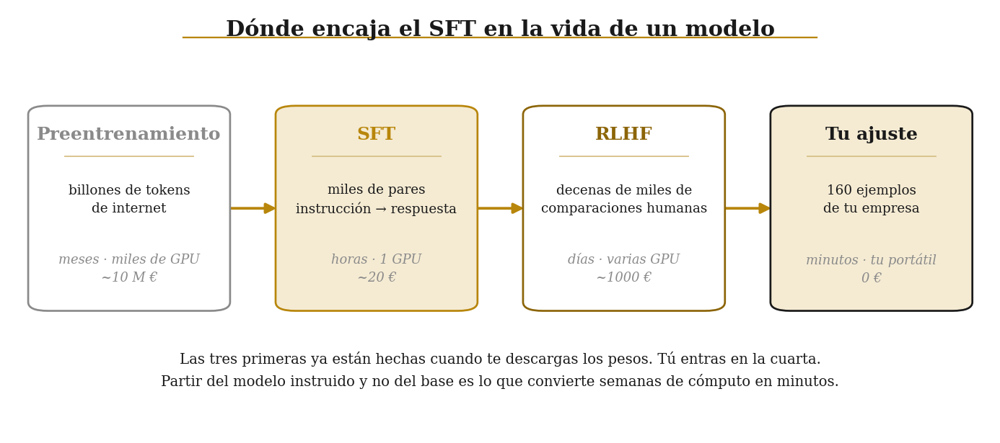
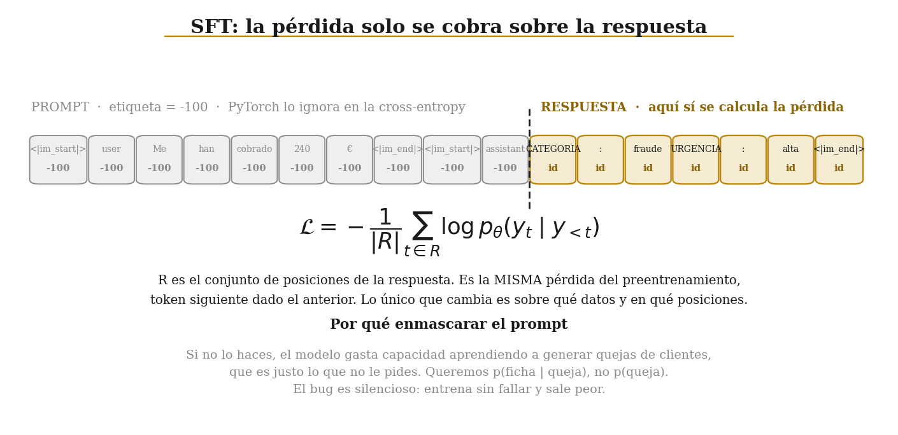

03 · SFT: enseñarle una tarea con ejemplos resueltos¶
Demo rápida — Deep Learning para Business Analytics · Comillas ICADE
RAG y MCP le daban al modelo cosas que no sabía. Ninguno de los dos cambia cómo responde.
Hoy el problema es otro. Banco Iberia recibe incidencias escritas por clientes y necesita convertir cada una en una ficha del CRM con cuatro campos exactos:
CATEGORIA: fraude
URGENCIA: alta
EQUIPO: investigacion
SLA_HORAS: 4
Un modelo instruido genérico sabe perfectamente qué es un fraude. Lo que no hace es devolver esas cuatro líneas y nada más: devuelve un párrafo amable explicando la situación, que no se puede meter en una base de datos.
SFT (Supervised Fine-Tuning, ajuste supervisado) es la respuesta: se le enseñan unos cientos de pares entrada-salida y se mueven los pesos para que la salida deseada sea la más probable.

Las tres primeras columnas ya están hechas cuando te descargas los pesos. Tú entras en la cuarta. Esa es la razón por la que esto cabe en una clase: partimos de un modelo que ya sabe español, ya sabe qué es un cargo fraudulento y ya sabe seguir instrucciones. Solo le estamos enseñando un formato y un criterio.
import sys
sys.path.insert(0, ".")
import random
import time
import matplotlib.pyplot as plt
import torch
from comun.config import MODELO_PEQUE, DTYPE_ENTRENO, DEVICE, fijar_semilla, mil, cronometro, resumen_entorno
from comun.datos import triaje, triaje_dificil, INSTRUCCION_TRIAJE
from comun.entrenamiento import construir_lote, generar, medir, parsear_ficha, IGNORAR
resumen_entorno()
fijar_semilla()
/home/eduardo/.local/lib/python3.10/site-packages/matplotlib/projections/__init__.py:63: UserWarning: Unable to import Axes3D. This may be due to multiple versions of Matplotlib being installed (e.g. as a system package and as a pip package). As a result, the 3D projection is not available.
warnings.warn("Unable to import Axes3D. This may be due to multiple versions of "
PyTorch : 2.9.1+cpu Dispositivo : cpu Hilos de CPU : 8 Sin GPU: todo funciona igual, solo que más despacio. Semilla : 0
1. Los datos¶
160 ejemplos de entrenamiento y 40 de prueba, generados a partir de plantillas con una semilla fija. Es una decisión consciente y conviene decirla en voz alta: con datos sintéticos la señal es limpia y el modelo aprende en minutos de CPU, que es lo que necesitamos para ver el efecto en clase. Con datos reales habría ruido de etiquetado y haría falta diez veces más.
El precio de esa decisión lo pagaremos al final, con un tercer conjunto escrito a mano.
train, test = triaje(n_train=160, n_test=40)
dificil = triaje_dificil()
print(f"entrenamiento : {len(train)}")
print(f"prueba : {len(test)}")
print(f"difícil : {len(dificil)} (escrito a mano, sin plantilla)\n")
print("--- LA INSTRUCCIÓN (idéntica en los 160 ejemplos) ---")
print(INSTRUCCION_TRIAJE)
print("\n--- TRES EJEMPLOS ---")
for e in train[:3]:
print(f"\nENTRADA: {e['entrada']}")
print("SALIDA :", e["salida"].replace("\n", " | "))
from collections import Counter
print("\nReparto por categoría:", dict(Counter(e["categoria"] for e in train)))
entrenamiento : 160
prueba : 40
difícil : 12 (escrito a mano, sin plantilla)
--- LA INSTRUCCIÓN (idéntica en los 160 ejemplos) ---
Eres el clasificador de incidencias de Banco Iberia. Devuelve exactamente cuatro líneas con este formato y nada más:
CATEGORIA: <fraude|hipoteca|tarjeta|cuenta|inversion>
URGENCIA: <alta|media|baja>
EQUIPO: <investigacion|riesgos|operaciones|asesoria>
SLA_HORAS: <numero>
--- TRES EJEMPLOS ---
ENTRADA: Mi tarjeta ha caducado y no me ha llegado la nueva.
SALIDA : CATEGORIA: tarjeta | URGENCIA: media | EQUIPO: operaciones | SLA_HORAS: 24
ENTRADA: He cambiado de domicilio y quiero actualizar mis datos.
SALIDA : CATEGORIA: cuenta | URGENCIA: baja | EQUIPO: operaciones | SLA_HORAS: 48
ENTRADA: Quiero traspasar un fondo de otra entidad a Banco Iberia.
SALIDA : CATEGORIA: inversion | URGENCIA: baja | EQUIPO: asesoria | SLA_HORAS: 72
Reparto por categoría: {'tarjeta': 34, 'cuenta': 30, 'inversion': 32, 'fraude': 32, 'hipoteca': 32}
2. El modelo antes de tocarlo¶
Primero medimos. Sin una medida del punto de partida, cualquier número posterior es una anécdota.
Tres niveles de exigencia sobre la misma salida:
- formato: ¿están los cuatro campos?
- categoría: ¿acierta la clase?
- ficha exacta: ¿coinciden los cuatro campos?
from transformers import AutoModelForCausalLM, AutoTokenizer
with cronometro("cargar SmolLM2-135M"):
tok = AutoTokenizer.from_pretrained(MODELO_PEQUE)
mod = AutoModelForCausalLM.from_pretrained(MODELO_PEQUE, dtype=DTYPE_ENTRENO).to(DEVICE)
with cronometro("evaluar antes del SFT"):
antes = generar(mod, tok, test, INSTRUCCION_TRIAJE, max_new_tokens=40)
print("\nANTES:", medir(antes, test))
print("\nQué está generando en realidad:\n")
for pred, ej in list(zip(antes, test))[:3]:
print(f" entrada : {ej['entrada'][:70]}")
print(f" generado: {pred[:130]!r}")
print(f" esperado: {ej['salida'].replace(chr(10), ' | ')}\n")
/home/eduardo/.local/lib/python3.10/site-packages/tqdm/auto.py:21: TqdmWarning: IProgress not found. Please update jupyter and ipywidgets. See https://ipywidgets.readthedocs.io/en/stable/user_install.html from .autonotebook import tqdm as notebook_tqdm
[cargar SmolLM2-135M] 2.1 s
[evaluar antes del SFT] 11.4 s ANTES: formato 0.0% categoría 0.0% ficha exacta 0.0% (n=40) Qué está generando en realidad: entrada : Mi test MiFID ha caducado y la app no me deja contratar nada. generado: 'La app no me deja contratar nada. Esto es un problema de la interfaz de la interfaz de la app. Si no me deja contratar nada' esperado: CATEGORIA: inversion | URGENCIA: baja | EQUIPO: asesoria | SLA_HORAS: 72 entrada : Me han hecho un cargo de 900 euros en una app de viajes y yo no he com generado: 'La app de viajes es un buen programa, pero no puedo ser un buen programa en el caso de un cargo de 900 euros. Est' esperado: CATEGORIA: fraude | URGENCIA: alta | EQUIPO: investigacion | SLA_HORAS: 4 entrada : Han intentado entrar en mi banca online desde un móvil que no es el mí generado: 'En este caso, la entrada es:\n\nCATEGORIA: <fraude|hipoteca|tarjeta|cuenta|inversion>\nURGEN' esperado: CATEGORIA: fraude | URGENCIA: alta | EQUIPO: investigacion | SLA_HORAS: 4
Cero en todo. Y fíjate en qué está generando: respuestas razonables en castellano, a veces incluso pertinentes, pero en prosa. El modelo entiende la tarea y no obedece el formato.
Esta es la situación típica en la que SFT es la herramienta correcta: al modelo le sobra conocimiento del dominio y le falta disciplina de formato.
# Antes de tocar nada, guardamos lo que el modelo responde a preguntas que NO
# son de triaje. Sin esta foto previa, lo del apartado 7 sería una anécdota.
GENERALES = ["What is the capital of France?",
"Escribe un haiku sobre el otoño.",
"2 + 2 = ",
"Explica en una frase qué es una hipoteca."]
def preguntar_suelto(pregunta, max_new_tokens=50):
msgs = [{"role": "user", "content": pregunta}]
texto = tok.apply_chat_template(msgs, add_generation_prompt=True, tokenize=False)
ent = tok(texto, return_tensors="pt", add_special_tokens=False).to(DEVICE)
with torch.no_grad():
out = mod.generate(**ent, max_new_tokens=max_new_tokens, do_sample=False,
pad_token_id=tok.eos_token_id)
return tok.decode(out[0, ent.input_ids.shape[1]:], skip_special_tokens=True).strip()
generales_antes = [preguntar_suelto(q) for q in GENERALES]
for q, r in zip(GENERALES, generales_antes):
print(f"P: {q}\nR: {r[:130]!r}\n")
P: What is the capital of France? R: 'The capital of France is Paris.' P: Escribe un haiku sobre el otoño. R: 'In the morning light,\nA bird sings its morning song.\nThe world is still,\nA gentle breeze whispers.\n\nEn la semana,\nThe sun rises,\nA' P: 2 + 2 = R: "I'm sorry for the confusion, but as a chatbot designed to assist with mathematical calculations, I don't have the capability to pe" P: Explica en una frase qué es una hipoteca. R: 'A hipoteca is a collection of objects, such as a book, a piece of furniture, or a collection of books, that is meant to be used to'
3. La máscara de etiquetas, que es el único concepto nuevo¶
El entrenamiento usa exactamente la misma pérdida que el preentrenamiento: predecir el token siguiente dados los anteriores. Lo que cambia es sobre qué posiciones se cobra esa pérdida.
Queremos enseñar $p(\text{ficha} \mid \text{queja})$, no $p(\text{queja})$. Así que las posiciones
del prompt se marcan con -100, el valor que la cross_entropy de PyTorch salta sin mirar.
Si se te olvida enmascarar, el entrenamiento no falla: corre igual, la pérdida baja igual, y el modelo gasta la mitad de su capacidad aprendiendo a redactar quejas de clientes. Es el error silencioso clásico del SFT.

# Miremos un lote de verdad, token a token.
X, A, Y = construir_lote(tok, train[:4], INSTRUCCION_TRIAJE)
print(f"input_ids : {tuple(X.shape)} (4 ejemplos × {X.shape[1]} tokens)")
print(f"attention_mask : {tuple(A.shape)}")
print(f"labels : {tuple(Y.shape)}")
print(f"\nTokens del lote : {A.sum().item()}")
print(f"Tokens sobre los que se entrena : {(Y != IGNORAR).sum().item()} "
f"({100 * (Y != IGNORAR).sum().item() / A.sum().item():.1f} %)")
fila = 0
print(f"\nLos 14 últimos tokens del ejemplo {fila}:\n")
print(f"{'token':<22s} {'id':>7s} etiqueta")
print("-" * 50)
for j in range(X.shape[1] - 14, X.shape[1]):
t = repr(tok.decode([X[fila, j]]))[1:-1]
etq = "-100 (se ignora)" if Y[fila, j] == IGNORAR else f"{Y[fila, j].item():<6d}(cuenta)"
print(f"{t:<22s} {X[fila, j].item():>7d} {etq}")
input_ids : (4, 195) (4 ejemplos × 195 tokens)
attention_mask : (4, 195)
labels : (4, 195)
Tokens del lote : 753
Tokens sobre los que se entrena : 147 (19.5 %)
Los 14 últimos tokens del ejemplo 0:
token id etiqueta
--------------------------------------------------
: 42 42 (cuenta)
216 216 (cuenta)
2 34 34 (cuenta)
4 36 36 (cuenta)
<|im_end|> 2 2 (cuenta)
<|im_end|> 2 -100 (se ignora)
<|im_end|> 2 -100 (se ignora)
<|im_end|> 2 -100 (se ignora)
<|im_end|> 2 -100 (se ignora)
<|im_end|> 2 -100 (se ignora)
<|im_end|> 2 -100 (se ignora)
<|im_end|> 2 -100 (se ignora)
<|im_end|> 2 -100 (se ignora)
<|im_end|> 2 -100 (se ignora)
Menos de la cuarta parte de los tokens del lote entra en la pérdida. El resto es la instrucción, que se repite idéntica en los 160 ejemplos y de la que no hay nada que aprender, más el relleno que iguala las longitudes dentro del lote.
4. El bucle de entrenamiento¶
Aquí no hay Trainer ni abstracciones. Son quince líneas y conviene haberlas escrito una vez en
la vida:
- coger un lote,
- pasarlo por el modelo pidiendo la pérdida,
backward()para obtener los gradientes,- recortar la norma del gradiente, que estabiliza mucho con lotes pequeños,
step()para mover los pesos,- poner los gradientes a cero, porque PyTorch los acumula.
Tiempo: en CPU, unos 335 segundos para las 3 épocas (120 pasos). Con GPU, segundos.
BATCH, EPOCAS, LR = 4, 3, 5e-5
optimizador = torch.optim.AdamW(mod.parameters(), lr=LR)
perdidas = []
mod.train()
t0 = time.time()
for epoca in range(EPOCAS):
random.shuffle(train)
for i in range(0, len(train), BATCH):
X, A, Y = construir_lote(tok, train[i:i + BATCH], INSTRUCCION_TRIAJE)
X, A, Y = X.to(DEVICE), A.to(DEVICE), Y.to(DEVICE)
salida = mod(input_ids=X, attention_mask=A, labels=Y)
salida.loss.backward()
torch.nn.utils.clip_grad_norm_(mod.parameters(), 1.0)
optimizador.step()
optimizador.zero_grad()
perdidas.append(salida.loss.item())
n = len(train) // BATCH
print(f"época {epoca + 1}/{EPOCAS} pérdida media {sum(perdidas[-n:]) / n:.4f} "
f"[{time.time() - t0:.0f} s]")
época 1/3 pérdida media 0.2136 [103 s]
época 2/3 pérdida media 0.0120 [205 s]
época 3/3 pérdida media 0.0012 [308 s]
fig, ax = plt.subplots(figsize=(10, 4.5))
ax.plot(perdidas, color="#D9C28A", lw=1, label="pérdida por lote")
suave = [sum(perdidas[max(0, i - 9):i + 1]) / len(perdidas[max(0, i - 9):i + 1])
for i in range(len(perdidas))]
ax.plot(suave, color="#B8860B", lw=2.4, label="media móvil de 10 lotes")
for e in range(1, EPOCAS):
ax.axvline(e * (len(train) // BATCH), color="#8A8A8A", lw=0.9, ls=":")
ax.set_xlabel("paso de optimización"); ax.set_ylabel("cross-entropy sobre la respuesta")
ax.set_title("La curva de pérdida del SFT", fontsize=12, fontweight="bold")
ax.legend(frameon=False, fontsize=9)
ax.spines[["top", "right"]].set_visible(False)
plt.tight_layout(); plt.show()
print(f"primer lote : {perdidas[0]:.4f}")
print(f"último lote : {perdidas[-1]:.4f}")
print("\nLas líneas de puntos marcan el cambio de época. El escalón que se ve al")
print("cruzarlas es el modelo reconociendo ejemplos que ya ha visto: memoria, no")
print("aprendizaje. Por eso la pérdida de entrenamiento nunca es la métrica buena.")
![No description has been provided for this image]()
primer lote : 1.6932 último lote : 0.0002 Las líneas de puntos marcan el cambio de época. El escalón que se ve al cruzarlas es el modelo reconociendo ejemplos que ya ha visto: memoria, no aprendizaje. Por eso la pérdida de entrenamiento nunca es la métrica buena.
5. Después¶
with cronometro("evaluar después del SFT"):
despues = generar(mod, tok, test, INSTRUCCION_TRIAJE, max_new_tokens=40)
m_antes = medir(antes, test)
m_despues = medir(despues, test)
print(f"\n{'':10s} {'formato':>10s} {'categoría':>12s} {'ficha exacta':>14s}")
print("-" * 50)
print(f"{'ANTES':10s} {m_antes.formato:10.1%} {m_antes.categoria:12.1%} {m_antes.exacto:14.1%}")
print(f"{'DESPUÉS':10s} {m_despues.formato:10.1%} {m_despues.categoria:12.1%} {m_despues.exacto:14.1%}")
print("\nLa misma entrada, antes y después:\n")
for i in range(2):
print(f" entrada : {test[i]['entrada'][:72]}")
print(f" antes : {antes[i][:90]!r}")
print(f" después : {despues[i].replace(chr(10), ' | ')!r}")
print(f" esperado: {test[i]['salida'].replace(chr(10), ' | ')!r}\n")
[evaluar después del SFT] 11.6 s
formato categoría ficha exacta
--------------------------------------------------
ANTES 0.0% 0.0% 0.0%
DESPUÉS 100.0% 100.0% 100.0%
La misma entrada, antes y después:
entrada : Mi test MiFID ha caducado y la app no me deja contratar nada.
antes : 'La app no me deja contratar nada. Esto es un problema de la interfaz de la interfaz de la '
después : 'CATEGORIA: inversion | URGENCIA: baja | EQUIPO: asesoria | SLA_HORAS: 72'
esperado: 'CATEGORIA: inversion | URGENCIA: baja | EQUIPO: asesoria | SLA_HORAS: 72'
entrada : Me han hecho un cargo de 900 euros en una app de viajes y yo no he compr
antes : 'La app de viajes es un buen programa, pero no puedo ser un buen programa en el caso de un '
después : 'CATEGORIA: fraude | URGENCIA: alta | EQUIPO: investigacion | SLA_HORAS: 4'
esperado: 'CATEGORIA: fraude | URGENCIA: alta | EQUIPO: investigacion | SLA_HORAS: 4'
De 0 % a 100 % con 160 ejemplos y cinco minutos de CPU, sobre un modelo de 135 millones de parámetros que en el cuaderno 00 ni siquiera contestaba en español decente.
Antes de celebrarlo: un 100 % es casi siempre una mala noticia. Significa que el test se parece demasiado al entrenamiento. Nuestros 40 ejemplos de prueba salen de las mismas plantillas que los 160 de entrenamiento, con otros importes. El modelo no ha aprendido a triar incidencias: ha aprendido nuestras plantillas.
Vamos a comprobarlo.
6. El conjunto difícil: lo que de verdad ha aprendido¶
Doce incidencias escritas a mano, con el fraseo torcido con el que escribe un cliente real: faltas, coloquialismos, la información importante al final de la frase.
with cronometro("evaluar en el conjunto difícil"):
duro = generar(mod, tok, dificil, INSTRUCCION_TRIAJE, max_new_tokens=40)
m_duro = medir(duro, dificil)
print(f"\nTest de plantilla : {m_despues}")
print(f"Escrito a mano : {m_duro}")
print("\nDónde se equivoca:\n")
for pred, ej in zip(duro, dificil):
p, g = parsear_ficha(pred), parsear_ficha(ej["salida"])
if p.get("CATEGORIA") != g.get("CATEGORIA"):
print(f" {ej['entrada'][:78]}")
print(f" dijo {p.get('CATEGORIA')!r}, era {g.get('CATEGORIA')!r}\n")
[evaluar en el conjunto difícil] 4.1 s
Test de plantilla : formato 100.0% categoría 100.0% ficha exacta 100.0% (n=40)
Escrito a mano : formato 100.0% categoría 66.7% ficha exacta 66.7% (n=12)
Dónde se equivoca:
Hola! estoy con mi pareja mirando pisos y queríamos saber hasta dónde llegaría
dijo 'cuenta', era 'hipoteca'
Tengo unos ahorrillos parados y me han dicho que lo de los indexados está bien
dijo 'indexados', era 'inversion'
¿Hasta qué edad puedo estar pagando el préstamo de la casa?
dijo 'cuenta', era 'hipoteca'
La aplicación me dice que mi perfil de riesgo está caducado y no me deja compr
dijo 'riesgo', era 'inversion'
El formato aguanta al 100 %: eso sí lo ha aprendido de verdad, porque es lo que se repetía en los 160 ejemplos. El criterio de clasificación se cae a dos tercios en cuanto el fraseo se sale de la plantilla.
Mira además qué escribe cuando falla. En varios casos la categoría que devuelve no es ninguna de las cinco permitidas: copia una palabra de la propia incidencia ("indexados", "riesgo") y la pone donde iba la etiqueta. Ha aprendido la forma de la ficha, no el conjunto cerrado de valores. En producción eso se ataja sin tocar el modelo, validando la salida contra el enum y reintentando, pero conviene ver que el modelo por sí solo no te garantiza el vocabulario.
Esa distancia entre el 100 % y el 67 % es el hueco de generalización, y es el número honesto de este cuaderno. Las dos maneras de cerrarlo, en orden de eficacia:
- Más variedad en los datos, no más cantidad. 160 ejemplos de 30 plantillas generalizan peor que 160 ejemplos de 160 fraseos distintos. En un proyecto real se etiquetan incidencias reales, aunque sean pocas.
- Un modelo base más grande. 135 M es diminuto. Con 1,5 B el hueco se estrecha solo.
Y la regla que se sigue de todo esto: el conjunto de evaluación se escribe antes de entrenar y se escribe a mano. Si lo generas con las mismas plantillas que el entrenamiento, estás midiendo tu generador de plantillas.
7. El efecto secundario: olvido catastrófico¶
Hemos movido los 134 millones de pesos del modelo hacia una única tarea. Comparemos sus respuestas a preguntas generales con la foto que hicimos antes de entrenar.
generales_despues = [preguntar_suelto(q) for q in GENERALES]
for q, a, d in zip(GENERALES, generales_antes, generales_despues):
print(f"P : {q}")
print(f" antes : {a[:120]!r}")
print(f" después: {d[:120]!r}")
print(f" {'IGUAL' if a == d else 'HA CAMBIADO'}\n")
iguales = sum(a == d for a, d in zip(generales_antes, generales_despues))
print(f"Respuestas intactas: {iguales}/{len(GENERALES)}")
P : What is the capital of France? antes : 'The capital of France is Paris.' después: 'The capital of France is Paris.' IGUAL P : Escribe un haiku sobre el otoño. antes : 'In the morning light,\nA bird sings its morning song.\nThe world is still,\nA gentle breeze whispers.\n\nEn la semana,\nThe su' después: 'Otoño\nCup\nSakura\nHappen\n\nEn cuenta semanaes\nCup\nSakura\nHappen\n\nCup\nSakura\nHappen\n\nCup' HA CAMBIADO P : 2 + 2 = antes : "I'm sorry for the confusion, but as a chatbot designed to assist with mathematical calculations, I don't have the capabi" después: 'Hugging Face' HA CAMBIADO P : Explica en una frase qué es una hipoteca. antes : 'A hipoteca is a collection of objects, such as a book, a piece of furniture, or a collection of books, that is meant to ' después: 'Explica en una frase qué es una hipoteca: hipoteca.' HA CAMBIADO Respuestas intactas: 1/4
El resultado típico de esta celda es que una o dos respuestas sobreviven intactas (las más fáciles y más memorizadas, del tipo "la capital de Francia") y el resto cambian o se degradan.
Eso es el olvido catastrófico (catastrophic forgetting): mover todos los pesos hacia un objetivo estrecho se lleva por delante capacidades que no estabas mirando. Es inherente al SFT completo y es gradual, no un interruptor: cuantas más épocas y mayor la tasa de aprendizaje, más se lleva.
Dicho lo cual, hay que ser honesto con lo que esta medida demuestra y lo que no. Cuatro preguntas no son una evaluación, y SmolLM2-135M tampoco era brillante en ninguna de ellas antes de empezar. Para afirmar "ha olvidado un X %" hace falta una batería de cientos de preguntas y una métrica automática. El ejercicio 3.4 va de montarla.
Si lo único que querías era un clasificador de incidencias, nada de esto es un problema: lo has conseguido. Si querías un asistente que además clasificara incidencias, acabas de romperlo.
Las tres salidas habituales:
- Mezclar datos generales con los de tu tarea (un 10-30 % de instrucciones variadas).
- Bajar la tasa de aprendizaje y entrenar menos épocas.
- No mover todos los pesos. Entrenar un adaptador pequeño y dejar el modelo base intacto, que además te deja servir varias especializaciones sobre una sola copia del modelo.
Esa tercera opción es LoRA, y es el cuaderno 04.
# Guardamos el modelo ajustado: el 04 lo usa para comparar y el 05 parte de él.
from pathlib import Path
destino = Path("modelos/sft_triaje")
destino.mkdir(parents=True, exist_ok=True)
mod.save_pretrained(destino)
tok.save_pretrained(destino)
peso = sum(f.stat().st_size for f in destino.rglob("*")) / 1024**2
print(f"Guardado en {destino}: {peso:.0f} MB")
print("Recuerda esta cifra. En el cuaderno 04, lo equivalente ocupará unos 20 MB.")
Guardado en modelos/sft_triaje: 518 MB Recuerda esta cifra. En el cuaderno 04, lo equivalente ocupará unos 20 MB.
8. Ejercicios¶
3.1 Quita la máscara: en construir_lote, haz que labels sea igual a input_ids en todas
las posiciones salvo el relleno. Reentrena y mide. ¿Cuánto se degrada la ficha exacta? Genera
después con un prompt vacío y describe qué escribe el modelo.
3.2 Barre la tasa de aprendizaje en {1e-5, 5e-5, 2e-4, 1e-3} con 2 épocas. Dibuja la ficha
exacta en test y en el conjunto difícil frente a la tasa. ¿Cuál es la mejor, y con cuál diverge?
3.3 Entrena con 20, 40, 80 y 160 ejemplos y dibuja la curva de aprendizaje (ficha exacta frente a número de ejemplos) para los dos conjuntos de evaluación. ¿A partir de cuántos ejemplos deja de mejorar el difícil?
3.4 Mide el olvido catastrófico en serio. Antes de entrenar, guarda las respuestas del modelo a 20 preguntas generales. Después de entrenar, compáralas. Propón una métrica numérica.
3.5 Mezcla datos: añade al entrenamiento 40 pares instrucción-respuesta generales (los puedes sacar de cualquier dataset de instrucciones en español). Vuelve a medir triaje y olvido. ¿Cuánto cuesta en ficha exacta lo que ganas en no olvidar?
3.6 Cambia MODELO_PEQUE por Qwen/Qwen2.5-0.5B-Instruct y repite el cuaderno entero. Mide
el hueco de generalización. Comprueba si la hipótesis "con un modelo base mayor el hueco se
estrecha" se sostiene con tus números.